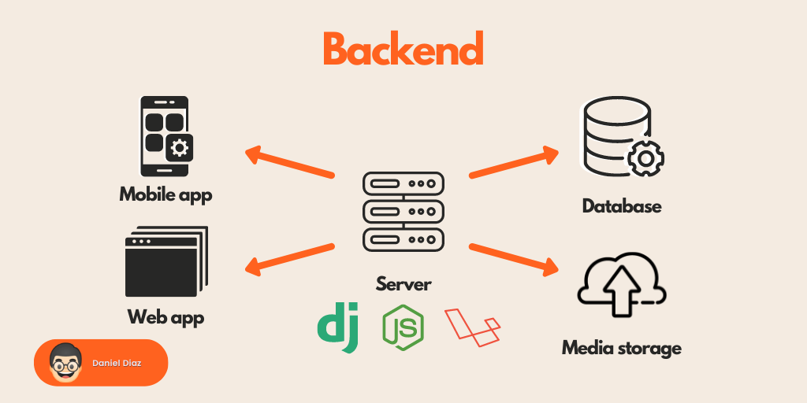

Програмування
Fronted розробка
Backend розробка

Fronted розробка |
Backend розробка |
|
 |
| Frontend перекладається з англійської мови як "зовнішній інтерфейс", backend - "серверна частина". Фронтенд - "обличчя" системи; інструменти та компоненти, які дають змогу користувачеві взаємодіяти з сайтом. | Бекенд-розробка передбачає створення скриптів для сервера, на якому розміщується сайт, внутрішнього наповнення системи веб-ресурсу, роботу з серверними технологіями (проєктування і розробка програмної логіки, взаємодія з базами даних (БД), робота з архітектурою тощо). |